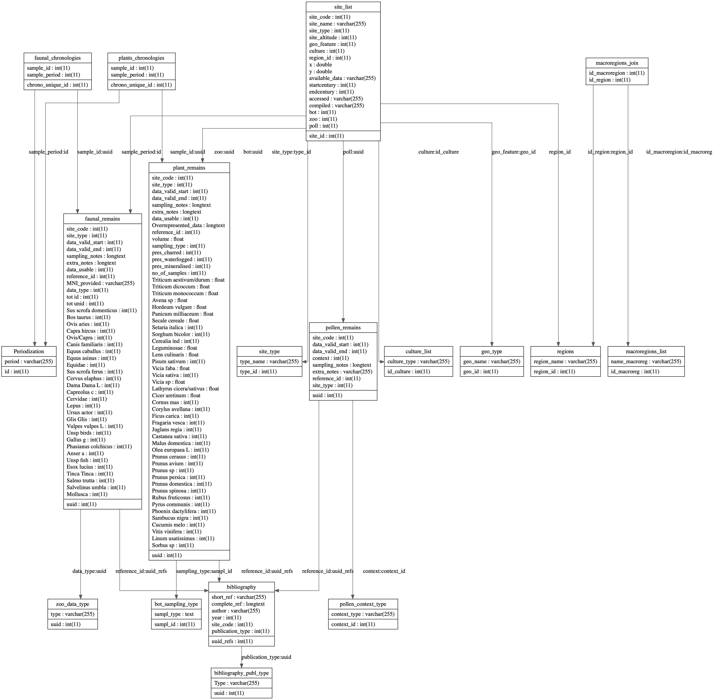

5 The database
Databases are increasingly being used in archaeology to archive and collect data digitally. There are mainly two types of databases—relational and non-relational. A relational database is more appropriate for well-defined data structures which can be linked through a mutual attribute. It is built and maintained with Structured Query Language (SQL), which allows the user to interrogate the database through queries (Gattiglia, 2018). A SQL database consists of several tables containing information in columns (variables) and rows (entries). Each row is defined by an unique key. Examples of relational database management systems include—MySQL, PostgreSQL, MariaDB, Microsoft SQL Server and Oracle Database. A non-relational database (NoSQL) is advantageous in the case of unstructured data, as data is archived as a single document rather than in a table. This structure allows much more flexibility, although NoSQL databases can be harder to use by non-specialists. Among the NoSQL database management systems, MongoDB is the most widely used.
5.1 Databases in archaeology
Within the field of archaeology databases are used primarily for two reasons— data management and data sharing. Most archaeological excavations are presently working with databases, so that information concerning each stratigraphic unit and finds can be recorded. This also allows databases to be be linked and interact with Geographical Information Systems (GIS), enabling researchers to introduce a spatial component in their investigation.
In many cases, this data remains private even after the excavation results have been published, although more and more teams are making their data available to the public. The growing popularity of open data has also created a need for standardisation. Since the 1970s, researchers have been working on thesauri (Figuera, 2018), dictionaries and guides for the correct archiving of archaeological information (e.g. pottery classes, context types, chronologies, etc.). A common system of naming practices is essential for sharing, integrating and analysing data. More recently, standardised databases and repositories are being created and made openly available (Gattiglia, 2015; Kandel et al., 2023; Niccolucci, 2020; Richards, 2021).
Most of the archaeological databases are based on SQL, as the visual relationships between different data structures are easier to understand.
5.2 Creating an Environmental Archaeology database
An integrated database of environmental archaeological data is still absent in Italy. A first step towards the digitisation of botanical data was taken by the BRAIN project (Botanical Records of Archaeobotany Italian Network), a census of the Italian excavations that reported archaeobotanical data (Mercuri et al., 2015). Although the website does not provide raw data, it was useful for the bibliographical research for this project. For faunal remains, a database is also missing, although a pilot project was started at the University of Siena by Boscato et al. (2007). The database was created using FileMaker Pro and was likely never published. More recently, in the later stages of this research, a database of Italian faunal data from 800 BCE to 800 CE has been published by Schmidtova et al. (2023).
The scope of this project therefore required the creation of a database containing raw environmental data. The creation of a database for this research responded to the need for a systematic approach to storing environmental data in a common format and in a way that is convenient for querying, rather than simply archiving the information. The aim is to have data readily available for exploratory data analysis in an automated process that does not require the query to be adapted and the data to be manually wrangled each time a new assemblage is added to the collection. This project uses MariaDB, a fast and stable fork of MySQL.
The database was structured with the creation of 21 tables. The table site_list is the core table, from which most of the other tables in the schema depend. The entries in the table are based on the chronology of a single assemblage. The chronology is defined both by the phase1 and by the centuries, with two columns: startcentury and endcentury. If a context has been sampled more than once, there will be as many entries as many chronologies. If a context has been sampled both for seeds and bones, the assemblage IDs will be recorded on the same entry (if the chronologies match).
| Context | Assemblage #ID |
|---|---|
| Imola, villa Clelia, 6th c. | 15 |
| Imola, villa Clelia, 10th-11th c. | 16 |
Since the table is context based, each site has been provided with an unique ID, so that if the site has been sampled in different areas the database can be still queried using the site ID2. In addition to the reference to the assemblages table, the table site_list also contains references to child tables with information about: site type, geography, altitude, coordinates, and region. The assemblages are organised in three tables, depending on the type of remain that has to be recorded in the database:
plant_remainsfaunal_remains
Each entry in the assemblages tables contains information about chronology, sampling type and notes, reference to the publication, reference to the main site, and the raw data. Figure 5.1 shows the schema with the complete list of tables in the database.

site_list at the core.The data was stored in the database after a thorough bibliographical research of the excavated sites (with a chronology pertaining to the 1st millennium CE) where environmental analyses have been undertaken. As in most of the cases the material was retrieved from physical publications, not digitised, the process of data entry was manual and could not be automatised. A list of the publication types where data was retrieved from can be visualised in Figure 5.2.
5.3 Database storing procedures
This sub chapter reports the breakthrough of all the tables stored inside the database. The database consists of several tables, most of which are linked together as typical for a relational database. Each table will be explained in detail, along with its fields, to allow future full reproducibility of the code.
5.3.1 General tables
5.3.1.1 Site features
The tables listed below were created to store information concerning site features including the site main attributes, geographical features, etc.
5.3.1.1.1 Table: site_list
The sites/contexts details have been stored in the master table site_list. This is the main table that contains the main details for each context and it is linked to other tables, that will be introduced below. The fields included in the table are:
site_id: a unique id for the entry, incremental and auto generated.site_code: an integer of the typeint(11)referring to the site where the assemblage has been collected. If a site was sampled in more locations, the site will be referred by this value, but thesite_idwill be different. Note that for larger sites (e.g. Pompeii, Ostia, etc.) for convenience the code was attributed to each house.site_name: text field of the typevarchar(255), containing the name of the site. Given that the table is structured around the chronology of each assemblage, if a site was sampled in different locations or more chronologies are provided, the site name will include these pieces of information (see Section 5.2 for an example).site_type: foreign key (linked to the tablesite_type), referring to the typology of the site where the assemblage has been collected. See Section 5.3.1.1.2 for details of the input values.site_altitude: an integer value reporting the altitude (in meters) of the site.geo_feature: foreign key (linked to the tablegeo_type), referring to the geography of the site where the assemblage has been collected. See Section 5.3.1.1.5 for details of the input values.culture: foreign key (linked to the tableculture_list), referring to the culture of the site where the assemblage has been collected. See Section 5.3.1.1.4 for details of the input values.region_id: foreign key (linked to the tableregions), referring to the current Italian region in which the site is located. See Section 5.3.1.1.3 for details of the input values.x: a numeric value of the typedoubleindicating the longitude at which the site is located.y: a numeric value of the typedoubleindicating the latitude at which the site is located.available_data: text field of the typevarchar(255), describing the type of data available for the site. The values that can be entered are:bot= Archaeobotanical remains andzoo= Zooarchaeological remains. If the codes are combined, more than one type of data is available for the same context and chronology.startcentury: an integer indicating the first century covered by the assemblage. The value can be positive for CE centuries and negative for BCE centuries. For instance, if the author attributes the assemblage to the 2nd c. BCE to the 1st c. CE, the field will be filled with the value-2.endcentury: an integer indicating the last century covered by the assemblage. The value can be positive for CE centuries and negative for BCE centuries. For instance, if the author attributes the assemblage to the 2nd c. BCE to the 1st c. CE, the field will be filled with the value1.bot: foreign key (linked to the tableplant_remains). The input value is theuuid(unique id) of the archaeobotanical assemblage.zoo: foreign key (linked to the tablefaunal_remains). The input value is theuuid(unique id) of the zooarchaeological assemblage.
5.3.1.1.2 Table: site_type
The table site_type is linked to the site_list table and consists of two fields:
type_id: a unique id for the site type, incremental and auto generated.type_name: text field describing the site type.
| type_id | type_name |
|---|---|
| 1 | Rural |
| 2 | Urban |
| 3 | Castrum |
| 4 | Castle |
| 5 | Necropolis |
| 6 | Rural site, villa |
| 7 | Religious |
| 8 | Rural site, mansio |
| 9 | Religious, monastery |
| 10 | Shipwreck |
| 11 | Urban, amphitheater |
5.3.1.1.3 Table: regions
The table regions is linked to the site_list table and consists of two fields:
region_id: a unique id for the region, incremental and auto generated.region_name: text field describing the region name.
| region_id | region_name |
|---|---|
| 1 | Abruzzo |
| 2 | Basilicata |
| 3 | Calabria |
| 4 | Campania |
| 5 | Emilia-Romagna |
| 6 | Friuli-Venezia Giulia |
| 7 | Lazio |
| 8 | Liguria |
| 9 | Lombardia |
| 10 | Marche |
| 11 | Molise |
| 12 | Piemonte |
| 13 | Puglia |
| 14 | Toscana |
| 15 | Trentino-Alto Adige/Südtirol |
| 16 | Umbria |
| 17 | Valle d’Aosta |
| 18 | Veneto |
| 19 | San Marino |
5.3.1.1.4 Table: culture_list
The table culture_list is linked to the site_list table and consists of two fields:
id_culture: a unique id for the culture type, incremental and auto generated.culture_type: text field describing the culture of the site.
| id_culture | culture_type |
|---|---|
| 1 | Roman |
| 2 | Late Roman |
| 3 | Lombard |
| 4 | Byzantine |
| 5 | Medieval |
| 6 | Goth |
| 7 | Early Medieval |
| 8 | Frankish |
| 9 | Norman |
| 10 | Rethian |
5.3.1.1.5 Table: geo_type
The table geo_type is linked to the site_list table and consists of two fields:
geo_id: a unique id for the geography type, incremental and auto generated.geo_name: text field describing the site geography.
| geo_id | geo_name |
|---|---|
| 1 | Plain |
| 2 | Coast |
| 3 | Hill |
| 4 | Mountain |
| 5 | Hilltop |
5.3.1.1.6 Table: macroregions_list
The table macroregions_list consists of two fields:
id_macroreg: a unique id for the macroregion, incremental and auto generated.name_macroreg: text field describing the macroregion.
This table is not connected to the site_list table, as the macroregion is assigned automatically when querying the database.
| id_macroreg | name_macroreg |
|---|---|
| 1 | Northern Italy |
| 2 | Central Italy |
| 3 | Southern Italy |
5.3.1.1.7 Table: macroregions_join
The table macroregions_join is a joining table of the tables regions and macroregions_list. It consists of two fields:
id_macroregion: foreign key linked to the tablemacroregions_listthrough theid_macroregfield.id_region: foreign key linked to the tableregionsthrough theregion_idfield.
The macroregions have been divided as in Table 5.6.
| Macroregion name | Regions |
|---|---|
| Northern Italy | (5) Emilia-Romagna, (6) Friuli-Venezia Giulia, (8) Liguria, (9) Lombardia, (12) Piemonte, (15) Trentino-Alto Adige/Südtirol, (17) Valle d’Aosta, (18) Veneto, (19) San Marino |
| Central Italy | (7) Lazio, (10) Marche, (14) Toscana, (16) Umbria |
| Southern Italy | (1) Abruzzo, (2) Basilicata, (3) Campania, (4) Calabria, (11) Molise, (13) Puglia |
5.3.1.2 Bibliographical tables
Each assemblage stored in the database was recorded along with its reference, in two tables.
5.3.1.2.1 Table: bibliography
The table bibliography is the table where the references for the assemblages in the database are stored. It consists of 7 fields:
uuid_refs: a unique id for the bibliographical element, incremental and auto generated.short_ref: text field of the typevarchar(255), which includes the short in-text reference formatted in Harvard style.complete_ref: text field of the typelongtext, which includes the complete reference formatted in Harvard style.author: text field of the typevarchar(255), with the name(s) of the author(s) of the publication. The last name is provided in full, while the first name is only indicated by the first letter. For instance, Jane Doe is formatted as “Doe, J.”.year: numerical field of the typeint(11), which provides the year of the publication.site_code: numerical field of the typeint(11), which provides the code of the site, from the fieldsite_codein the tablesite_list.publication_type: foreign key, linked to the tablebibliography_publ_type(See Table 5.7).
5.3.1.2.2 Table: bibliography_publ_type
The table bibliography_publ_type is linked to the bibliography table and consists of two fields:
uuid: a unique id for the publication type, incremental and auto generated.Type: text field describing the publication type.
| uuid | Type |
|---|---|
| 1 | Book |
| 2 | Book section |
| 3 | Conference paper |
| 4 | |
| 5 | Journal article |
| 6 | Webpage |
| 7 | Report |
| 8 | PhD Thesis |
| 9 | MA Thesis |
5.3.1.3 Table: Periodization
The table Periodization consists of two fields:
id: a unique id for the chronological period, incremental and auto generated.period: text field, of the typevarchar(255)describing the publication type.
| id | Period |
|---|---|
| 1 | R |
| 2 | LR |
| 3 | EMA |
| 4 | Ma |
For further information concerning the division of the dataset into larger chronologies, see Section 6.1.
5.3.2 Archaeobotany
5.3.2.1 Macroremains
The process of data collection from edited publications (see Figure 5.2 for the publication types) did not present major problems in taxa comparability. The names of the plants were in fact matching across publications. However, in some cases authors could only identify the seeds’ species (e.g. Avena sp.), or it was not possible to properly identify the taxa (e.g. Cerealia und.). Specific taxa are indeed hard to identify without other elements of the plants; for this reason some taxa have been merged together in one column of the database. For instance, Triticum aestivum and Triticum durum are recorded together. Seed counts have been reported in the species column when an author reported a taxon rarely reported in other publications, rather than creating a new column for that taxon. For instance, Prunus armeniaca is reported in the column Prunus sp. In this case, the name of the identified taxon can be accessed through the extra_notes field. More information on the nomenclature used in this research can be found in the Chapter 3.
5.3.2.1.1 Table: plant_remains
The plant remains have been stored in the master table plant_remains. This is the main table that contains the absolute counts for each assemblage and it is linked to other tables, to locate the assemblage at site and chronological level. The fields included in the table are:
uuid: a unique id for the assemblage, incremental and auto generated.site_code: foreign key (linked to the tablesite_list) referring to the site where the assemblage has been collected. The input value is an integer of the typeint(11).site_type: foreign key (linked to the tablesite_type), referring to the typology of the site where the assemblage has been collected. See Section 5.3.1.1.2 for details of the input values.data_valid_start: an integer indicating the first century covered by the assemblage. The value can be positive for CE centuries and negative for BCE centuries. For instance, if the author attributes the assemblage to the 2nd c. BCE to the 1st c. CE, the field will be filled with the value-2.data_valid_end: an integer indicating the last century covered by the assemblage. The value can be positive for CE centuries and negative for BCE centuries. For instance, if the author attributes the assemblage to the 2nd c. BCE to the 1st c. CE, the field will be filled with the value1.sampling_notes: a text field, of the typelongtext, that can be filled with information concerning sampling methodologies, precise location of sampling (e.g. a kiln, a kitchen, a wastepit, etc.), a more precise chronological range (if the author provided a datation in years rather than centuries), preservation mode (e.g. charred, waterlogged, etc.) and further notes that might be useful.extra_notes: a multipurpose text field, of the typelongtext, that can be filled with information concerning first interpretation of the layer or the data from which the assemblage has been collected. The field also reports if the excavation provided other archaeobotanical material not included in this database (e.g. anthracological analyses), or plants that are not part of this table (e.g. ruderals, weeds, etc.). Finally, the field also contains the breakdown of counts that have been summarised under one column. For instance, the fieldCerealiaat times summarises cereal types that are not recorded in separate fields; cereals as Triticum compactum are rarely mentioned in Italian archaeobotanical reports, and if reported on a separate field it would be underrepresented.data_usable: boolean field. The value is0if the assemblage is not reliable (e.g. data too scarce, chronology too vague, etc.), but was recorded in the database as it might be useful for qualitative studies. If the value is0and the assemblage is hence not usable, the reason is reported in the fieldextra_notes. The value is1if the assemblage is reliable and it can be used quantitatively or for presence/absence analysis. Note that if the value is 0 the site will not appear in the map.overrepresented_data: a text field, of the typelongtext, that can be filled with information regarding overrepresented taxa. This is a common occurrence in contexts as wine/olive processing areas or stocking deposits.reference_id: foreign key (linked to the tablebibliography), referring to the bibliographical source that contained information about the assemblage. See Section 5.3.1.2 for details of the input values.volume: an integer value reporting the volume (in litres) of the sample Whenever more samples from the same location and with the same chronology have been reported by the author, they have been merged together and the volume represents the total of each sample. The volumes of the individual samples are reported in the fieldextra_notes.sampling_type: foreign key (linked to the tablebot_sampling_type), referring to the sampling methodology used by the author. See Table 5.9 for details of the input values.pres_charred: a binary field which takes the value of 1 if the macroremains in the assemblage are preserved by charring, 0 if the seeds were preserved any other way.pres_mineralised: a binary field which takes the value of 1 if the macroremains in the assemblage are preserved by mineralisation, 0 if the seeds were preserved any other way.pres_waterlogged: a binary field which takes the value of 1 if the macroremains in the assemblage are preserved by waterlogging, 0 if the seeds were preserved any other way.no_of_samples: an integer indicating the number of samples collected from the context recorded in the entry. As for thevolumefield, whenever more samples from the same location and with the same chronology have been reported by the author, they have been merged together.Fields for the absolute counts of the taxa:
Triticum aestivum/durum,Triticum dicoccum,Triticum monococcum,Avena sp,Hordeum vulgare,Panicum milliaceum,Secale cereale,Setaria italica,Sorghum bicolor,Cerealia ind,Leguminosae,Lens culinaris,Pisum sativum,Vicia faba,Vicia sativa,Vicia sp,Lathyrus cicera/sativus,Cicer aretinum,Cornus mas,Corylus avellana,Ficus carica,Fragaria vesca,Juglans regia,Castanea sativa,Malus domestica,Olea europaea L,Prunus cerasus,Prunus avium,Prunus sp,Prunus persica,Prunus domestica,Prunus spinosa,Rubus fruticosus,Pyrus communis,Sambucus nigra,Cucumis melo,Vitis vinifera,Linum usatissimus,Sorbus sp. The fields are of the typeint(11)and are filled with the absolute count copied from the author’s report.
5.3.2.1.2 Table: bot_sampling_type
The table bot_sampling_type is linked to the plant_remains table and consists of two fields:
sampl_id: a unique id for the sampling typology, incremental and auto generated.sampl_type: text field describing the sampling methods. Other sampling types that are commonly used in archaeobotany (e.g. total sampling, probabilistic sampling, etc.) are not part of this table as no excavation reported using them.
| sampl_id | sampl_type |
|---|---|
| 1 | visual sampling |
| 2 | vs + specified quantity |
| 3 | specified quantity |
| 4 | not specified |
| 5 | specified variable quantity |
5.3.2.1.3 Table: plants_chronologies
The table plants_chronologies consists of two fields:
sample_id: foreign key (linked to the tableplant_remains), where thesample_idis the fielduuid.sample_period: foreign key (linked to the tablePeriodization), where thesample_periodis the fieldid.
Information concerning the way the chronology is attributed to the assemblage can be found in the methodology chapter (Section 6.1).
5.3.3 Zooarchaeology
The process of data collection from edited publications did not present major issues in species comparability. In most cases, animal names were matching across publications. Whenever this was not the case, the scientific name of the species was provided, which was helpful in case of uncertainties (e.g. ‘Hen’ vs ‘Chicken’). Given the size of this project, not every species has been recorded in the database. Species that were not useful to the reconstruction of agricultural practices (for instance, tortoises) have been recorded in the field extra_notes of the table faunal_remains. Other species were merged together into a single column. This is the case of Mollusca. When authors were not certain about the classification of certain bones to the species level, they have been reported at the genus or family level. The most common occurrence is for sheep and goats, mostly reported under the Caprinae family, or for donkeys and horses, reported under the Equus sp.
5.3.3.1 Table: faunal_remains
The animal remains have been recorded in the master table faunal_remains. This is the main table that contains the NISP counts from each assemblage and it is linked to other tables, to locate the assemblage at site and chronological level. The fields included in the table are:
uuid: a unique id for the assemblage, incremental and auto generated.site_code: foreign key (linked to the tablesite_list) referring to the site where the assemblage has been collected. The input value is an integer of the typeint(11).site_type: foreign key (linked to the tablesite_type), referring to the typology of the site where the assemblage has been collected. See Section 5.3.1.1.2 for details of the input values.data_valid_start: an integer indicating the first century covered by the assemblage. The value can be positive for CE centuries and negative for BCE centuries. For instance, if the author attributes the assemblage to the 2nd c. BCE to the 1st c. CE, the field will be filled with the value-2.data_valid_end: an integer indicating the last century covered by the assemblage. The value can be positive for CE centuries and negative for BCE centuries. For instance, if the author attributes the assemblage to the 2nd c. BCE to the 1st c. CE, the field will be filled with the value1.sampling_notes: a text field, of the typelongtext, that can be filled with information concerning sampling methodologies, precise location of sampling (e.g. a kiln, a kitchen, a wastepit, etc.), a more precise chronological range (if the author provided a datation in years rather than centuries), and further notes that might be useful.extra_notes: a multipurpose text field, of the typelongtext, that can be filled with information concerning first interpretation of the layer or the data from which the assemblage has been collected. The field also reports if the excavation provided other information that are not included in this database, namely—age, sex, MNI counts, etc. Finally, the field also contains the breakdown of counts that have been summarised under one column. For instance, the fieldMolluscaor ‘Unsp. birds’; some types of birds are rarely mentioned in other publications, and if reported on a separate field they would be underrepresented.data_usable: boolean field. The value is0if the assemblage is not reliable (e.g. data too scarce, chronology too vague, etc.), but was recorded in the database as it might be useful for qualitative studies. If the value is0and the assemblage is hence not usable, the reason is reported in the fieldextra_notes. The value is1if the assemblage is reliable and it can be used quantitatively. Note that if the value is 0 the site will not appear in the map.reference_id: foreign key (linked to the tablebibliography), referring to the bibliographical source that contained information about the assemblage. See Section 5.3.1.2 for details of the input values.MNI_provided: text field of the typevarchar(255). The value isNoif the publication did not report MNI (minimum number of individuals) counts andYesif MNI was provided.data_type: foreign key (linked to the tablezoo_data_type) used to record which type of data the authors reported in the publication. See Table 5.10 for details of the input values.tot_id: an integer (of the typeint(11)) that reports the number of identified bones in the assemblage.tot_unid: an integer (of the typeint(11)) that reports the number of unidentified bones in the assemblage.Fields for the NISP values of the species, reported with the scientific name:
Sus scrofa domesticus,Bos taurus,Ovis aries,Capra hircus,Ovis/Capra,Canis familiaris,Equus caballus,Equus asinus,Equidae,Sus scrofa ferus,Cervus elaphus,Dama Dama L,Capreolus c,Cervidae,Lepus,Ursus actor,Glis Glis,Vulpes vulpes L,Unsp birds,Gallus g,Anser a,Unsp fish,Esox lucius,Salmo trutta,Salvelinus umbla,Tinca Tinca,Mollusca. The fields are of the typeint(11)and are filled with the NISP count copied from the author’s report.
5.3.3.2 Table: zoo_data_type
The table zoo_data_type consists of two fields:
uuid: a unique id for the entry, incremental and auto generated.type: text field, of the typevarchar(255)describing the data type reported in the publication.
| uuid | type |
|---|---|
| 1 | NISP |
| 2 | NISP+BIO |
5.3.3.3 Table: faunal_chronologies
The table plants_chronologies consists of three fields:
sample_id: foreign key (linked to the tablefaunal_remains), where thesample_idis the fielduuid.sample_period: foreign key (linked to the tablePeriodization), where thesample_periodis the fieldid.chrono_unique_id: an incremental unique primary key. It was necessary to have a distinct unique key as assemblages can range between two chronologies.
Information concerning the way the chronology is attributed to the assemblage can be found in the methodology chapter (Section 6.1).
See Section 6.1.↩︎
If the site is very large and the assemblages were numerous (e.g. Pompeii, Rome), the sites were recorded with different IDs.↩︎